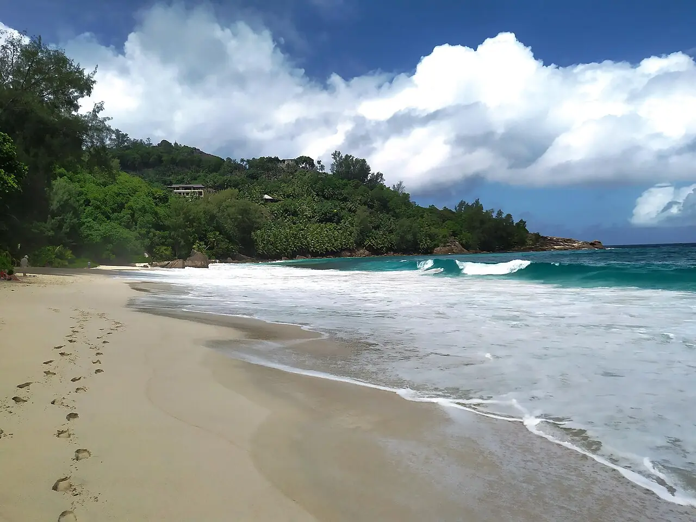

Anse Intendance
Mahé, Seychelles · surf, bodyboard, baignade

Plage sauvage du sud de Mahé, bordée de granite et de cocotiers, sans barrière de corail devant. Elle reçoit la houle de l’océan Indien et offre l’une des rares vagues surfables de l’île, surtout de mai à octobre.
- Lieu
- Mahé, Seychelles
- Niveau
- Intermédiaire
- Activités
- surf, bodyboard, baignade
- Type d'eau
- Mer / océan
- Coordonnées
- -4.78, 55.50 (position approximative du secteur)
Dangers à connaître
- Courants d’arrachement puissants et shore break, surtout de mai à octobre.
- Plage non surveillée : ne te baigne pas si la mer est formée.
Le conseil d'Ocean Buddy
Baigne-toi seulement par mer calme, plutôt entre novembre et avril, et jamais seul.
Ouvrir dans Ocean Buddy Télécharger sur l'App Store
Source : Fiche Ocean Buddy · septembre 2026 · à vérifier localement.